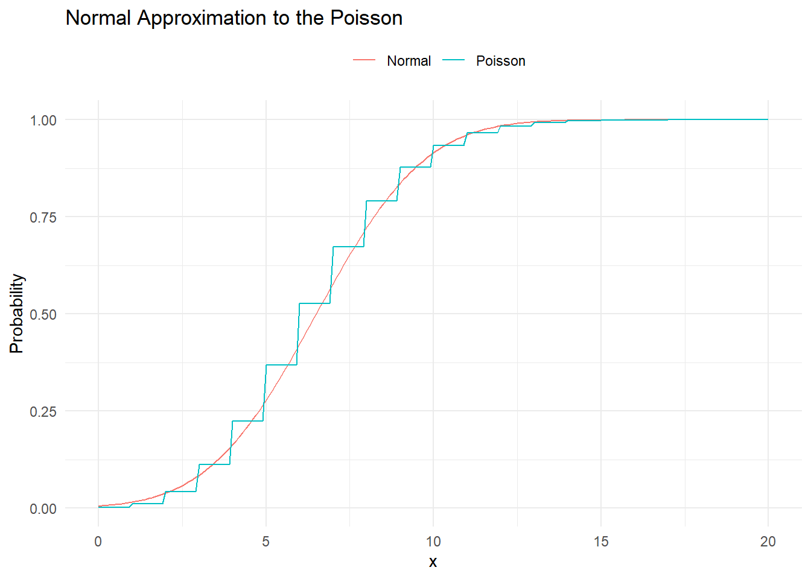

4.4 K-Way Tables
Example of Chi-Square Test of Homogeneity A project studied whether attending physicians order more unnecessary blood transfusions than residents. The categorical variable frequency of orders has 4 levels: frequently, occasionally, rarely, and never.
library(dplyr)
library(ggplot2)
library(stats)
pop <- NULL
pop[1:49] <- 1
pop[50:120] <- 2
lev <- NULL
lev[c(1:2, 50:64)] <- 1
lev[c(3:5, 65:92)] <- 2
lev[c(6:36, 93:115)] <- 3
lev[c(37:49, 116:120)] <- 4
dat <- data.frame(pop, lev)
dat$pop <- factor(dat$pop, levels = c(1, 2),
labels = c("attending", "resident"))
dat$lev <- factor(dat$lev, levels = c(1, 2, 3, 4),
labels = c("frequently", "occasionally", "rarely", "never"))
df <- (2-1)*(4-1)
alpha <- 0.05
(test <- chisq.test(dat$lev, dat$pop))##
## Pearson's Chi-squared test
##
## data: dat$lev and dat$pop
## X-squared = 31.881, df = 3, p-value = 5.543e-07# Graph of hypothesis test
lrr = -Inf
urr = qchisq(p = alpha, df = df, lower.tail = FALSE)
data.frame(xi = 0:400 / 10) %>%
mutate(density = dchisq(x = xi, df = df)) %>%
mutate(rr = ifelse(xi < lrr | xi > urr, density, 0)) %>%
ggplot() +
geom_line(aes(x = xi, y = density), color = "black") +
geom_area(aes(x = xi, y = rr), fill = "red", alpha = 0.3) +
geom_vline(aes(xintercept = test$statistic), color = "blue") +
labs(title = bquote("Chi-Square Test for Homogeneity"),
subtitle = bquote("P-value ="~.(test$p.value)),
x = "xi^2",
y = "Density") +
theme(legend.position="none")